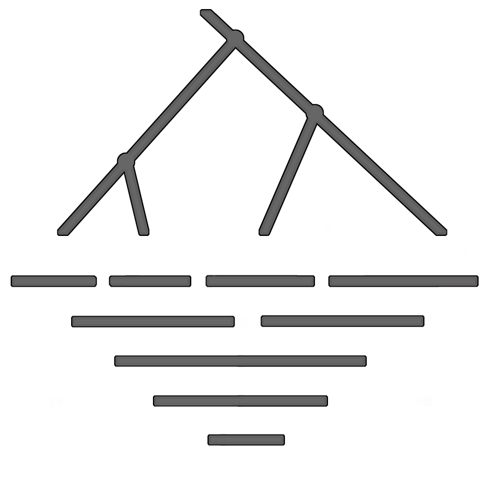

 東条研究室 Tojo Lab.
School of Information Science, JAIST
研究乃 ススメ方
1. マイルストーンを立てる
これから半年間で何をどうするか計画を立てる．これは常に修正・立案を続ける．すなわち，6か月の計画を立てたらあとは半年後まで何も考えないのではなく，毎月のように，その時点からの半年を考える．1年・2年のレンジで計画を立てるのは不毛であると思う．不確定要素も多いし，人間はそんなに遠くまで見通せるものではない.
計画立案に際しては，自分で動かせない〆切を設定する．具体的には研究発表，学会投稿の〆切などである．
6か月で何をするかを考えたら今度はそれを半分ずつに区切って逆算してみよう．3か月では何ができていればいいか，次は1か月で何ができていればいいか，そして次は2週間で何ができていればいいか．ならば1週間では？ 3日では？では今日は何をすべきか．
2. 口頭発表について
研究内容と言うのは素人にはわかりにくいものである．わかりにくい理由が多大なる基礎知識を前提にしないと理解できないからというなら，ある程度しかたない．しかし，なぜそういう研究をやっているのかという動機の部分は誰にでも理解できるものでなければならない．研究でやっている内容がすぐ役に立つとか世の中のためになるというなら，それでもよい．実際計算機科学というのは世の中で役に立つものだけに，そういう動機は容易に理解されるようだ．だからと言って役に立つかどうかという価値観に縛られる必要はない．多くの研究者が言うように研究というのはおもしろければいいのだと思う．ただし，ならば何がおもしろいのかを的確に伝えなければならない．天文学や考古学はおよそ浮き世離れした学問であり，とてもすぐ役には立ちそうにないけれど，税金を何十億円もつぎ込んで衛星打ち上げたり加速器を作ってもあまり文句は言われない．そのロマンが人にわかりやすいからだと思う．
プロの研究者とアマチュアの学生の違いは，前者は常に自分の見通しをディフェンスできることである．ディフェンスの自信を生むのは自分が専門とする分野について的確にその研究の動機を説明でき，その魅力を他人に説得できることである．
聴衆を前にしては，自分の頭で納得したことを話す．自分の頭でわかっていること以外を理解してもらおうと思ってもそれは無理．聴衆の方を向いて明瞭な声で話す．ウケを狙う工夫をすれば，あとの話は聞いてもらえる．あるいは，魅力的な話であれば必ずウケを狙うネタの一つや二つはあるはず． OHPや発表用資料は絵心やデザインセンスがモノを言う．うまい人のまねをしよう．
3. 書くことについて
書くことは思考の手段である．書いたことは他人に読んでもらえる形式にすべきである．他人は自分とは思考・知識を分けあっていない．自分の主張を他人に伝えるためには，まず議論の土台となるところを確実に伝えなければならない．さらには，自分にとっては容易な三段論法も，バックグラウンドの違う人にとっては理解困難であることも推して知るべしである．他人に自分の考えを伝えるには自分よりはるかに用意周到にならなければならない．これは読む側に立ってみればわかる．読んでわかりにくいのは筆者のせいである．書く側は一人よがりであってはいけない．
自分の考えを公開するときは，自分の考えの長所と思うところも迷いが消えるまで納得するまで作文する．自分自身が納得していないことをどうやって他人に説明できようか．この作文がやがて「これこれなるなる弱点は承知の上だが，それを上回るこういう利点がある」式の説得力のある論文を生む.
“Publish or perish.” 考えを発表しないのは，外からの観察にかからない．すなわち外から見れば何をしていないのも同じである.
常日頃，力のこもったいい文章を読もう．気合いの入った文章を多く読む．そしてスタイルをまねる．誰々風の口調を，文体をまねて，きどって書いてみる.
書くに際しては正しい書法を学ぶべきである．コロンやセミコロン，イタリック体やクォートの正しい用い方，図・表の見せ方．LaTeX を皆が用いるようになったおかげで著しい誤りは減ったものの，書法の型やぶりはそれだけで筆者の品性と見識を疑うに足る．
4. 英語について
19世紀に英国が世界に植民地を拡大し，その次の世紀で米国が未曽有の経済的繁栄を遂げてしまったことは，全世界の非英語民族にとって全く残念かつ不運なことである．加えてここ 10 年くらいはインターネットを含むメディアの尋常ならざる進化で情報交換量が爆発的に増えてしまった．つい 10 年前はドイツ語やフランス語，ロシア語を解することの価値があったが近年その価値が急速に薄れつつある．19世紀のザメンホフの試みも現代の機械翻訳の試みも道は未だ遠いようである．しようがないからあきらめて英語を勉強しよう．避けて通ることは単に自分の価値を下げるだけである.
中学・高校を通じて英語を習い，その必要性も何となく理解できるのにやっぱり英語は避けて通れてきたというのが多くの人にとって実情であると思う．日本の一部の大学では英語なぞ読めなくても日本語で書かれたものだけを調べて卒論は書けただろうし，今後また社会に出ても避けようとすればいくらでも避けることができるだろう．しかし研究という領域においてはそれは通用しない．論文の 9割以上は英語で書かれている．その 9割以上を避けて読まずに通すということは調べ物を拒否するということであり，そこを拒否すれば当然その先に積むべき自分の仕事は成り立たない．
英語の勉強法が市中の本に山ほど書いてあるが，特にリスニング能力を高めたければひたすら時間数聴きまくるしかないように思う．ここで一つだけ提案．最大の難敵は /l/ と /r/ の区別であろう．(/s/と/θ/, /b/と/v/，/h/と/f/ はどちらか一方が日本語にあるからまだ区別しやすいと思う) ふだん英語を読むときはもちろん，外来語を話すときも自分の舌の位置を区別してみたらどうか？ 幸いなことに，いや残念なことに，ほとんどの計算機用語は英語をカタカナにしただけ．これらの中でもともと /l/ のところは，舌を上歯裏につけて言う習慣をつけてみる．
5. 数式を愛でよ
数学が得意な人なんていない．人間に男女や血液型の区別はあっても，文系・理系の区別なんてない．高校時代の進路選択の問題を，数式に対して思考停止するか否かの問題にすり替えてはいけない．
数式には書いた人・作った人の気持ちが籠っている．数式で書いてあるということは，文字で書けば冗長になるところをきれいにコンパクトにまとめてあるということである．ならばそこに含まれている多くの情報を確実に取り出さなければならない．式を読み飛ばすのは道断である．自分は数学が苦手だと思っている人の多くは式を理解しようという誠意が足りないのである．式を書いた人・作った人も最初から記号の組合せだけで作ったわけではない．そこには言語なり視覚的なり別のメディアで語られるべきイメージがあり，それを明確に示すために形式的に置き換えたに過ぎない．一つの式をじっくり眺め，それが何を言っているのか考えよう．頭の中にイメージが湧くまで考えよう．
6. 急がば読め
急がば回れ．言い替えて，急がば読め．何かの期限が迫っていて何もアイディアが出てこないときに，自分の頭で何かを紡ぎ出そうとしても無駄である．カラの頭からは何も思いつけないのである．期限が迫っているときこそ，前から読まなくてはと思っていた本・論文を開いてみる．読んで理解したことに基づけば数ページ程度の文章くらい一晩で書けるものである．
読書法は世間で膾炙されるだけにいろいろな人がさまざまなことを言っている．自分で気にいった読書法の本があればそれをバイブルにしても構わないが，ここでも一つの提案．読書法には緩急二つのギアを頭の中にセットしておこう．一つ目のクイックモードはいわゆる斜め読みであり，どういう傾向の内容であるか，自分の知りたいことが書いてあるかどうかを判断できるだけでよい．英語で斜め読みは難しいと思う人も多いだろうが，図や式なら目にとまるはずであるから，そこから特徴を捉える．一様にアルファベットが並んでいる文でもクォーテーションやイタリック体など特徴あるところを目にとめる．もう一つはじっくりモード．なまじ自分の知っている分野の本だと逆にこれは難しい．しかし自分をだまして知らないふりをしてゆっくりと書かれてある論理を追ってみよう．自分の研究にとって大事な文献であるなら，この両方の読み方を試みなければならない．
文献読みが思うように進まないときは，本を閉じて計算機に向かい，思うところを書いてみる．今度は自分の頭と手から創造する. このように勉強モード (吸収モード)と創造モード(吐き出しモード)は一方が行き詰まったら他方に切り替える．
7. そして最後に，考えよう
疑問を感じたら考える．問題を与えられたら考える．自分の頭で考えてみる．考えるのを途中で放棄しない．考えるのを煩わしく思うときから思考停止の習慣が身についてしまう．
あることを考え始めたときに，そういうことを考えるためには専門知識が足りないと思うのは，思考を停止するための言い逃れである．専門用語や概念・知識は知っているに越したことはない．それはふだんから身につける努力をすべきである．しかし，それがないからと言って考えを放棄していい理由にはならない．自分の今知っていることから普通にさらなる思考が湧き出てくるはずである．それを停めてはいけない．
考える習慣は日常から身につけるものである．問題を与えられたら，新聞やテレビの報道を目にし耳にし疑問を感じたら，窓の外に自然現象を観察したら，それはどういうことなのか自分の頭で考えてみよう．